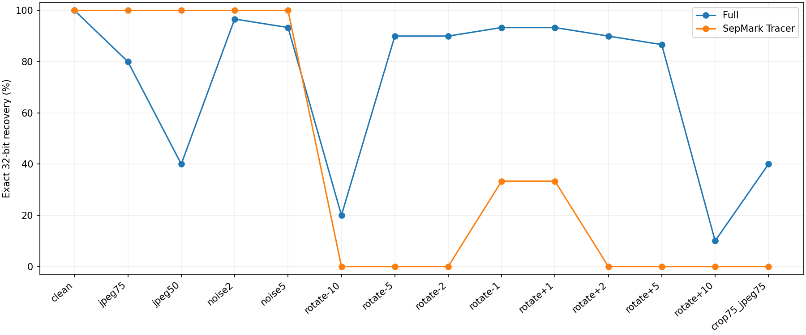
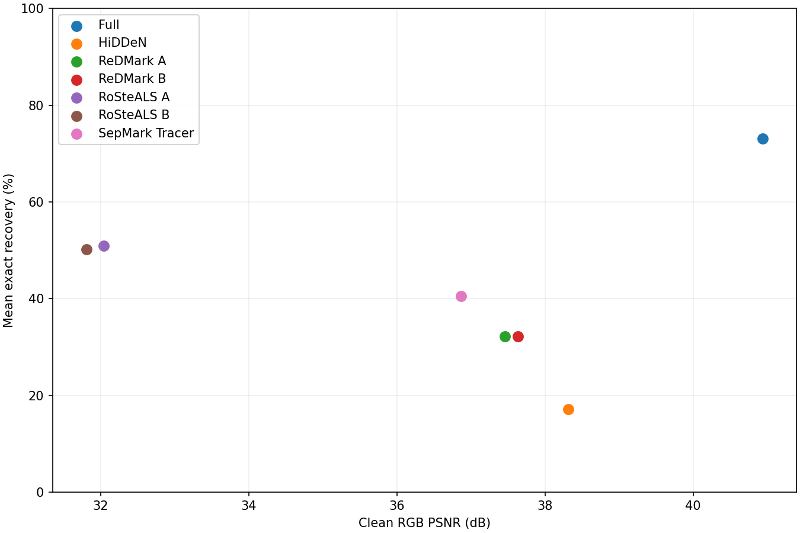

Full 73.10%; HiDDeN 17.14%; ReDMark A/B 32.14%; RoSteALS A 50.95% / B 50.24%; SepMark 40.48%. These are exact useful 32-bit recovery rates under the ten-image, fourteen-condition protocol.
HiDDeN uses Meta Revisited/JND weights, not the original 2018 checkpoint. Main scoring is payload-only; marker-gated recovery is 71/420 rather than 72/420. ReDMark author-precision correction changed no payload outcomes across 840 cases. RoSteALS native BCH improves exact recovery from 155 to 214 (A) and 148 to 211 (B); uncorrectable packets are erasures. A/B are padding controls, not separate models.
SepMark Tracer recovered 170/420 useful 32-bit messages (40.48%), compared with Full 307/420 (73.10%). SepMark mean clean PSNR was 36.87 dB and SSIM 0.9677. Full minus SepMark recovery difference was 32.62 percentage points, with a paired-image bootstrap 95% interval [16.43, 44.29]. Across fourteen conditions Full won/tied/lost 9/1/4.
SepMark (ACM MM 2023) uses the author-linked 256-pixel/128-bit epoch90 checkpoint, not the separate 30-bit checkpoint. SHA256 e68c51892d89cad7db525645f9f16082378b55869154d7e94456aaf6344126e0. Encoder 106 and robust decoder 83 inference tensors loaded strictly. Only decoder_C (Tracer) is used; the semi-robust deepfake Detector is not a robustness baseline.
Protocol matches the existing teammate comparison: same ten images, three shared 32-bit payloads and fourteen attacks. The first32 of128 bits contain the shared payload;96 padding bits use fixed independent random seeds. Messages are signed +/-0.1; strength is the author default 1. No test-set tuning or oracle recovery is used. Following the teammate MBRS adapter, images are reduced to 256, the signed-image residual is divided by2 and resized onto the512 image, then quantized to RGB8. The receiver resizes the whole received image to 256 and thresholds logits at0. Native128-bit BER is retained separately. All wrong32-bit messages are wrong outputs; this decoder has no erasure gate.
Independent calibration on DIV2K0001-0003 produced zero native128-bit errors and zero adapted32-bit errors in the three tested samples. Direct author RGB8 received-image decoding and adapter logits agreed. This is a small interface smoke test, not proof of optimal performance. Formal cases were independently rescored from saved logits and deterministic messages.
Limits: SepMark was developed for source tracing and deepfake detection on faces; these natural images evaluate cross-domain transfer. Capacity, native resolution, redundancy, distortion and rejection mechanisms differ. Eight rotation conditions dominate the flat mean; ten images are the bootstrap units. Results do not establish universal superiority. Candidate selection followed earlier baseline results and this context must remain disclosed. Model selection was not outcome-blind; the comparison does not establish superiority over all alternatives.
| variant | cases | exact | recovery | wrong | erasure | psnr | ssim |
|---|---|---|---|---|---|---|---|
| full_png | 420 | 307 | 0.730952 | 0.000000 | 0.269048 | 40.936068 | 0.979314 |
| hidden045_bits | 420 | 72 | 0.171429 | 0.828571 | 0.000000 | 38.316772 | 0.943964 |
| redmark_A | 420 | 135 | 0.321429 | 0.678571 | 0.000000 | 37.453641 | 0.946465 |
| redmark_B | 420 | 135 | 0.321429 | 0.678571 | 0.000000 | 37.630424 | 0.950590 |
| rosteals_A | 420 | 214 | 0.509524 | 0.000000 | 0.490476 | 32.040897 | 0.941601 |
| rosteals_B | 420 | 211 | 0.502381 | 0.000000 | 0.497619 | 31.807144 | 0.940159 |
| sepmark_B | 420 | 170 | 0.404762 | 0.595238 | 0.000000 | 36.867624 | 0.967695 |


| variant | condition | cases | exact | recovery |
|---|---|---|---|---|
| full_png | clean | 30 | 30 | 1.000000 |
| full_png | crop75_jpeg75 | 30 | 12 | 0.400000 |
| full_png | jpeg50 | 30 | 12 | 0.400000 |
| full_png | jpeg75 | 30 | 24 | 0.800000 |
| full_png | noise2 | 30 | 29 | 0.966667 |
| full_png | noise5 | 30 | 28 | 0.933333 |
| full_png | rotate+1 | 30 | 28 | 0.933333 |
| full_png | rotate+10 | 30 | 3 | 0.100000 |
| full_png | rotate+2 | 30 | 27 | 0.900000 |
| full_png | rotate+5 | 30 | 26 | 0.866667 |
| full_png | rotate-1 | 30 | 28 | 0.933333 |
| full_png | rotate-10 | 30 | 6 | 0.200000 |
| full_png | rotate-2 | 30 | 27 | 0.900000 |
| full_png | rotate-5 | 30 | 27 | 0.900000 |
| hidden045_bits | clean | 30 | 10 | 0.333333 |
| hidden045_bits | crop75_jpeg75 | 30 | 0 | 0.000000 |
| hidden045_bits | jpeg50 | 30 | 0 | 0.000000 |
| hidden045_bits | jpeg75 | 30 | 0 | 0.000000 |
| hidden045_bits | noise2 | 30 | 9 | 0.300000 |
| hidden045_bits | noise5 | 30 | 6 | 0.200000 |
| hidden045_bits | rotate+1 | 30 | 8 | 0.266667 |
| hidden045_bits | rotate+10 | 30 | 0 | 0.000000 |
| hidden045_bits | rotate+2 | 30 | 10 | 0.333333 |
| hidden045_bits | rotate+5 | 30 | 8 | 0.266667 |
| hidden045_bits | rotate-1 | 30 | 9 | 0.300000 |
| hidden045_bits | rotate-10 | 30 | 0 | 0.000000 |
| hidden045_bits | rotate-2 | 30 | 7 | 0.233333 |
| hidden045_bits | rotate-5 | 30 | 5 | 0.166667 |
| redmark_A | clean | 30 | 30 | 1.000000 |
| redmark_A | crop75_jpeg75 | 30 | 0 | 0.000000 |
| redmark_A | jpeg50 | 30 | 17 | 0.566667 |
| redmark_A | jpeg75 | 30 | 28 | 0.933333 |
| redmark_A | noise2 | 30 | 30 | 1.000000 |
| redmark_A | noise5 | 30 | 30 | 1.000000 |
| redmark_A | rotate+1 | 30 | 0 | 0.000000 |
| redmark_A | rotate+10 | 30 | 0 | 0.000000 |
| redmark_A | rotate+2 | 30 | 0 | 0.000000 |
| redmark_A | rotate+5 | 30 | 0 | 0.000000 |
| redmark_A | rotate-1 | 30 | 0 | 0.000000 |
| redmark_A | rotate-10 | 30 | 0 | 0.000000 |
| redmark_A | rotate-2 | 30 | 0 | 0.000000 |
| redmark_A | rotate-5 | 30 | 0 | 0.000000 |
| redmark_B | clean | 30 | 30 | 1.000000 |
| redmark_B | crop75_jpeg75 | 30 | 0 | 0.000000 |
| redmark_B | jpeg50 | 30 | 17 | 0.566667 |
| redmark_B | jpeg75 | 30 | 28 | 0.933333 |
| redmark_B | noise2 | 30 | 30 | 1.000000 |
| redmark_B | noise5 | 30 | 30 | 1.000000 |
| redmark_B | rotate+1 | 30 | 0 | 0.000000 |
| redmark_B | rotate+10 | 30 | 0 | 0.000000 |
| redmark_B | rotate+2 | 30 | 0 | 0.000000 |
| redmark_B | rotate+5 | 30 | 0 | 0.000000 |
| redmark_B | rotate-1 | 30 | 0 | 0.000000 |
| redmark_B | rotate-10 | 30 | 0 | 0.000000 |
| redmark_B | rotate-2 | 30 | 0 | 0.000000 |
| redmark_B | rotate-5 | 30 | 0 | 0.000000 |
| rosteals_A | clean | 30 | 30 | 1.000000 |
| rosteals_A | crop75_jpeg75 | 30 | 0 | 0.000000 |
| rosteals_A | jpeg50 | 30 | 29 | 0.966667 |
| rosteals_A | jpeg75 | 30 | 30 | 1.000000 |
| rosteals_A | noise2 | 30 | 30 | 1.000000 |
| rosteals_A | noise5 | 30 | 30 | 1.000000 |
| rosteals_A | rotate+1 | 30 | 28 | 0.933333 |
| rosteals_A | rotate+10 | 30 | 0 | 0.000000 |
| rosteals_A | rotate+2 | 30 | 3 | 0.100000 |
| rosteals_A | rotate+5 | 30 | 0 | 0.000000 |
| rosteals_A | rotate-1 | 30 | 29 | 0.966667 |
| rosteals_A | rotate-10 | 30 | 0 | 0.000000 |
| rosteals_A | rotate-2 | 30 | 5 | 0.166667 |
| rosteals_A | rotate-5 | 30 | 0 | 0.000000 |
| rosteals_B | clean | 30 | 30 | 1.000000 |
| rosteals_B | crop75_jpeg75 | 30 | 0 | 0.000000 |
| rosteals_B | jpeg50 | 30 | 30 | 1.000000 |
| rosteals_B | jpeg75 | 30 | 30 | 1.000000 |
| rosteals_B | noise2 | 30 | 30 | 1.000000 |
| rosteals_B | noise5 | 30 | 30 | 1.000000 |
| rosteals_B | rotate+1 | 30 | 30 | 1.000000 |
| rosteals_B | rotate+10 | 30 | 0 | 0.000000 |
| rosteals_B | rotate+2 | 30 | 1 | 0.033333 |
| rosteals_B | rotate+5 | 30 | 0 | 0.000000 |
| rosteals_B | rotate-1 | 30 | 28 | 0.933333 |
| rosteals_B | rotate-10 | 30 | 0 | 0.000000 |
| rosteals_B | rotate-2 | 30 | 2 | 0.066667 |
| rosteals_B | rotate-5 | 30 | 0 | 0.000000 |
| sepmark_B | clean | 30 | 30 | 1.000000 |
| sepmark_B | crop75_jpeg75 | 30 | 0 | 0.000000 |
| sepmark_B | jpeg50 | 30 | 30 | 1.000000 |
| sepmark_B | jpeg75 | 30 | 30 | 1.000000 |
| sepmark_B | noise2 | 30 | 30 | 1.000000 |
| sepmark_B | noise5 | 30 | 30 | 1.000000 |
| sepmark_B | rotate+1 | 30 | 10 | 0.333333 |
| sepmark_B | rotate+10 | 30 | 0 | 0.000000 |
| sepmark_B | rotate+2 | 30 | 0 | 0.000000 |
| sepmark_B | rotate+5 | 30 | 0 | 0.000000 |
| sepmark_B | rotate-1 | 30 | 10 | 0.333333 |
| sepmark_B | rotate-10 | 30 | 0 | 0.000000 |
| sepmark_B | rotate-2 | 30 | 0 | 0.000000 |
| sepmark_B | rotate-5 | 30 | 0 | 0.000000 |